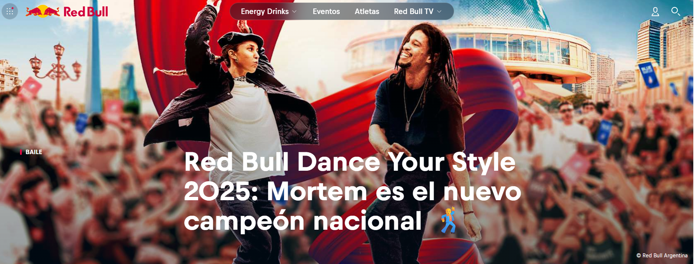
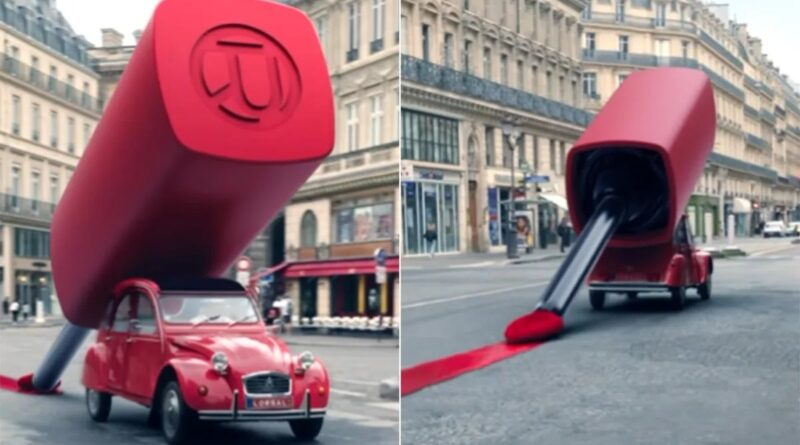
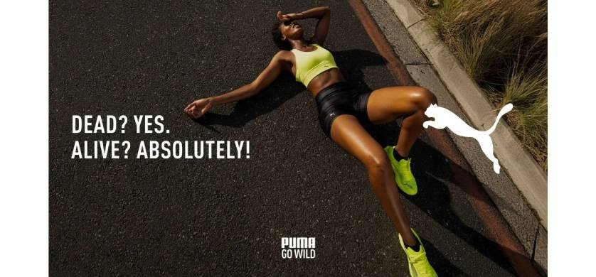

En 2020, en medio de la pandemia, Nike lanzó una campaña que se volvió viral y conmovió al mundo: “You Cant Stop Us”. En este video, el movimiento es el lenguaje universal que une a personas de distintas culturas, disciplinas y condiciones.
Con un montaje visual impactante, combinando mitades de diferentes deportistas en una misma acción, la campaña transmite un mensaje poderoso: el cuerpo puede ser límite, pero también puede ser unión, fuerza e inspiración.
Desde el punto de vista del marketing, es un claro ejemplo de cómo una marca puede apelar a la emoción y al compromiso social sin dejar de ser coherente con su identidad. Nike no vende solo zapatillas, vende actitud, resiliencia y comunidad.
Como acróbata y bailarina, esta campaña me tocó profundamente. El lenguaje del cuerpo, en sincronía con una narrativa visual fuerte, logra lo que muchas veces las palabras no pueden: inspirar.
Si bien la campaña ya tiene un par de años...continua siendo disruptora. En el universo de la publicidad de perfumes, hay un patrón que se repite: modelos glamorosas caminando en cámara lenta, miradas seductoras, vestidos de gala, y una voz en off que susurra algo como “la esencia de la feminidad”. Pero en 2016, Kenzo decidió hacer algo completamente distinto.
Con la dirección del cineasta Spike Jonze y la coreografía de Ryan Heffington (el mismo de “Chandelier” de Sia), la marca lanzó "Kenzo World", una campaña que parece más una performance que un comercial. La protagonista es Margaret Qualley, actriz y bailarina, que interrumpe una aburrida gala para explotar en una coreografía salvaje, extraña, emocional y profundamente liberadora.
Durante casi cuatro minutos, Margaret corre, salta, se sacude, hace muecas, patea el aire, se arrastra por las escaleras y hasta lanza un rayo láser con las manos. Todo al ritmo de una canción frenética y envolvente, con planos que parecen coreografiados con ella. No hay perfume a la vista hasta el final. No hay romance. No hay clichés.
Como artista del movimiento, este comercial me impactó profundamente. No solo por la técnica de la bailarina o la dirección creativa impecable, sino porque pone al cuerpo como mensaje nuevamente, no como adorno. El cuerpo no está ahí para “lucirse” o “verse bien”, sino para expresa: incomodidad, energía, libertad, ruptura. Y eso es lo que lo hace tan impactante. Además, la actriz combina mis pasiones: bailar y hacer acrobacia.
Desde lo comunicacional, "Kenzo World" es una jugada brillante. En lugar de seguir las fórmulas de la industria, la marca construye su identidad a través del riesgo creativo, el humor y la autenticidad. Apela a un público que no quiere parecerse a nadie más. Un perfume no tiene por qué ser serio, ni sexy, ni glamoroso: puede ser raro, divertido y salvaje. Esa es su propuesta de valor; y lo que la diferencia de otras marcas.
Esta campaña me recuerda que el marketing, cuando se hace con visión artística, puede ser también una forma de arte. Y que el movimiento, en cualquiera de sus formas, tiene un poder comunicativo enorme cuando se lo deja ser protagonista.
Red Bull Dance Your Style: cuando una marca impulsa la cultura

Cuando pensamos en Red Bull, probablemente lo primero que se nos viene a la cabeza es su famoso eslogan: "Red Bull te da alas". Pero más allá de la bebida energética, la marca ha construido un universo de experiencias que la hacen mucho más que un simple producto. Un claro ejemplo de esto es Dance Your Style, una competencia internacional de baile callejero que Red Bull organiza desde 2018, y que se ha convertido en un fenómeno cultural alrededor del mundo. A través de este evento, Red Bull no solo patrocina una competencia: fomenta una comunidad, celebra la diversidad de estilos y culturas, y le da visibilidad a artistas que muchas veces no tienen el reconocimiento que merecen. Locking, popping, hip hop, house... en Dance Your Style todos los estilos son bienvenidos, y la regla principal es simple: conectar con el público. Porque en esta competencia, es la gente y no un jurado técnico quien elige al ganador.
Como estudiante de marketing y artista del movimiento, me parece fascinante cómo Red Bull entiende a su audiencia. No intenta venderte directamente su producto, sino que construye una plataforma donde los bailarines pueden brillar, crear, expresarse. Red Bull no está en el centro de la escena; el bailarín lo está. Y eso es lo que hace tan poderosa esta acción: genera un valor real, una experiencia que deja huella y que refuerza la relación emocional entre la marca y su comunidad.
Además, Dance Your Style es una muestra clara de cómo el marketing de contenidos puede ir más allá de las redes sociales. Red Bull crea momentos, vivencias y recuerdos que trascienden la publicidad tradicional. Los videos de las batallas, las entrevistas a los artistas, los behind the scenes... todo forma parte de una narrativa que posiciona a la marca como un aliado de la cultura urbana.
En un mundo donde muchas marcas intentan venderte un estilo de vida, Red Bull te lo da. Y lo hace, literalmente, dándote el escenario.
L’Oréal pinta la calle: arte, innovación y belleza en acción

En 2023, L’Oréal sorprendió al mundo del marketing y la moda al transformar una calle entera en un gigantesco lienzo de color para presentar su nueva línea de labiales. Esta acción no fue solo un lanzamiento de producto, sino una declaración de intenciones: la belleza está en movimiento, y el maquillaje es una forma de arte que merece ser celebrada en espacios públicos, no solo en pasarelas o tiendas.
La campaña consistió en intervenir una avenida con grandes pinceladas de color, aplicando literalmente la textura y el tono de los nuevos labiales sobre el asfalto. La calle se convirtió en una obra de arte efímera, capturando la atención de peatones, medios y redes sociales. Era imposible no detenerse a mirar, fotografiar o compartir. En un mundo saturado de anuncios digitales, L’Oréal eligió volver al espacio físico para conectar con su audiencia de manera innovadora.
Aunque esta acción no tiene una relación directa con el movimiento del cuerpo, sí tiene un fuerte vínculo con la expresión artística. El maquillaje es, para mí, otra forma de arte: es jugar con colores, texturas, formas. Es una herramienta para transformar rostros, contar historias, generar impacto. Esta intervención de L’Oréal lleva esa idea a un nivel urbano, masivo y disruptivo.
Como estudiante de marketing, encuentro fascinante cómo estas acciones generan un valor agregado que va más allá del producto. No se trata solo de vender un labial, sino de provocar una emoción, generar una conversación, crear contenido que la gente quiera compartir. Es un claro ejemplo de cómo las marcas líderes entienden que, para destacar en un mercado saturado, necesitan crear experiencias memorables.
En definitiva, esta acción de L’Oréal es una muestra de cómo el movimiento de una marca —su capacidad de innovar, sorprender, romper moldes— es clave para mantenerse relevante. Porque el arte está en constante evolución, y las marcas que lo entienden son las que logran dejar huella.
PUMA y su llamado a "Go Wild": cuando el marketing celebra la autenticidad

En marzo de 2025, PUMA lanzó su campaña más ambiciosa hasta la fecha: Go Wild. Esta iniciativa no solo representa una estrategia de marketing, sino una declaración de principios que redefine la identidad de la marca, enfocándose en la autoexpresión, la comunidad y el placer inherente al movimiento.
La campaña se centra en el concepto del "runner's high", esa sensación de euforia que experimentan los corredores durante la actividad física. En lugar de destacar a atletas famosos, PUMA eligió mostrar a corredores cotidianos: desde madres recientes hasta personas que corren con sus perros, resaltando que el deporte es para todos y que cada uno puede encontrar su propia forma de "liberar su energía salvaje".
Esta estrategia surge de una investigación global que involucró a más de 10,000 consumidores, identificando segmentos como los "inspiring self-expressers" y los "convivial belongers", grupos que valoran la autenticidad y la conexión social a través del deporte. Con un aumento del 40% en su inversión en marketing respecto al año anterior, PUMA demuestra su compromiso con esta nueva visión.
Como artista del movimiento y estudiante de marketing, encuentro inspirador cómo PUMA integra el arte, la emoción y la comunidad en su estrategia. Go Wild no es solo una campaña publicitaria; es un llamado a vivir el deporte como una forma de arte y expresión personal, alineándose perfectamente con los valores que promueve este blog.